I got a flat tire, and soon after noticed a broken spoke, on the peak day of the heat wave. Quite an afternoon! But it's all fixed now, and I met some wonderful people along the way.
St. Georges, by the beach
 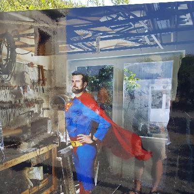
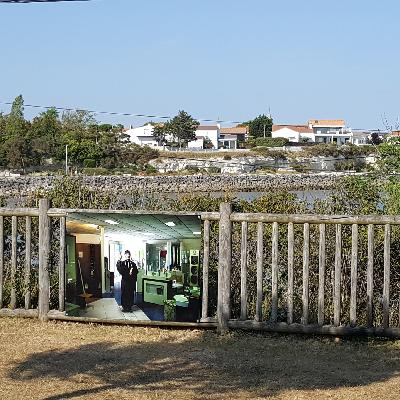
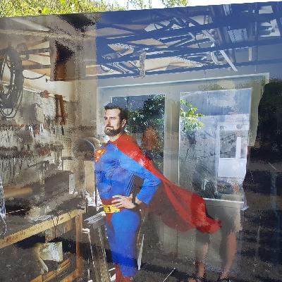
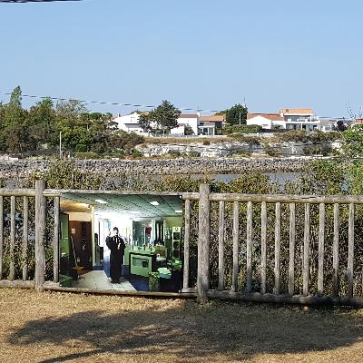

In Rochefort, I finally had a tacos!
I arrived in Rochefort a little tired, but in good shape. The 100-plus degree weather does slow you down! Five liters of water for the bike ride was just enough. I stayed at Samya's place, through AirBnb. Originally from Brazil, she learned French while living in Côte d'Ivoire, which is next to Burkina Faso, and shares the same currency as Burkina and Senegal. She worked on development there. Small world!
Rochefort is a nice litte town with a maritime history. They have reconstructions of some of the more famous sailboats that were built there. I saw a free outdoor concer, “Ukestock” - a mini-Woodstock with ukeleles, in honor of Woodstock's 50th anniversary.
I also finally had a tacos. It's nothing like a taco. It's more like a burrito, only instead of rice and beans, the filling is French fries, it has a bunch of cheese-wiz style cheese in it, and the meat is middle-Eastern. I had kefta meat in mine. It was OK.
 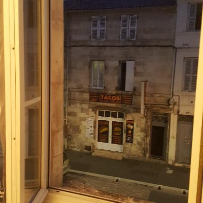
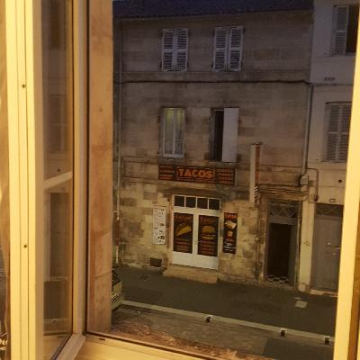
Flat tire! Broken Spoke!
The next day, another 100 degree-plus day, I was planning to go through La Rochelle, on to a place called Marans. I made it, but it was a bit of an adventure. First, I got a flat tire. I have a spare inner tube, so that was OK, but I had to figure out how to replace it. Did I mention it was like a hundred degrees?
About 10km later, I had a broken spoke. Maybe the compromised spoke is what caused the flat? I was about 6km from a train station, so I walked and half-rode there. There was a train in about an hour, which got me the 20-30 km to La Rochelle around 4 PM.
At the bike shop, they didn't have the right sized spoke. That was mostly OK, because after a broken spoke, often the rest of the wheel is compromised. Also, clearly my wheel wasn't strong enough to go over bumpy dirt paths with all the weight I'm carrying. So, I bought a new wheel for €55. They didn't have it in stock, but would be able to get it and install it by the next afternoon.


In Marans, my stop, I had a normal (non-app-based) B&B lined up. It was wonderful! There was a nice Belgian couple there, who were biking around on a pair of Brompton folding bikes. They also did hitchiking, and I assume took trains. There was also a guy from Paris and his son there at breakfast. The conversation was nice enough that I stayed until 11, not worrying too much about the bike – it wasn't due until the afternoon.
The only downside was that meant I left La Rochelle at about 2:30 PM, since the bike stop was closed for lunch from noon to 2. And I had a long ride ahead of me, to warmshowers host. I got in at about 7, which turned out to be maybe 45 minutes before the other warmshowers guest, who arrived totally exhausted. Did I mention the 95-plus temperatures, and the strong headwind?
 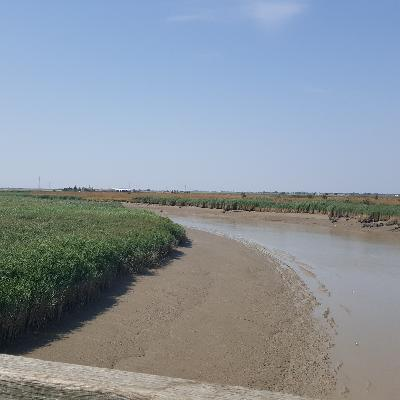
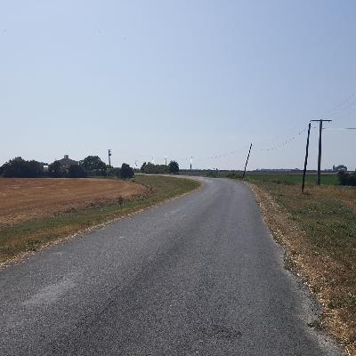
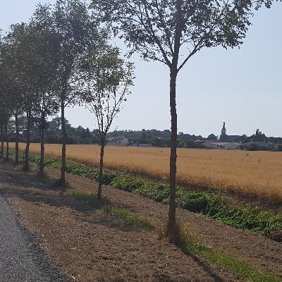
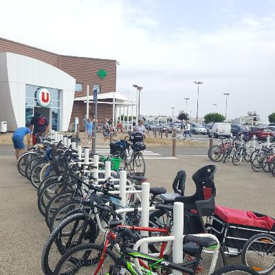
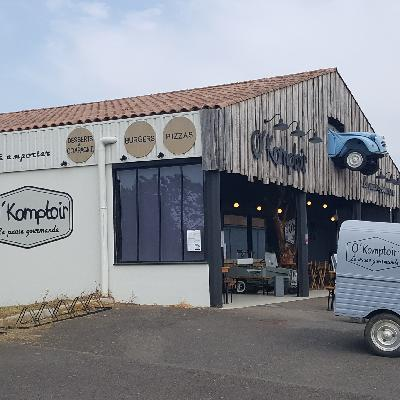
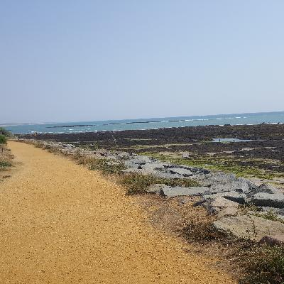
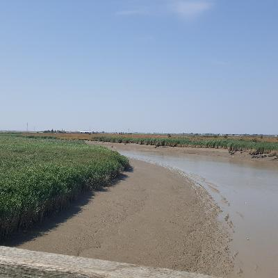
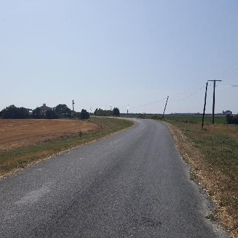
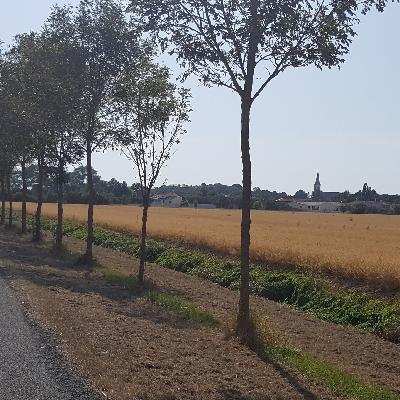
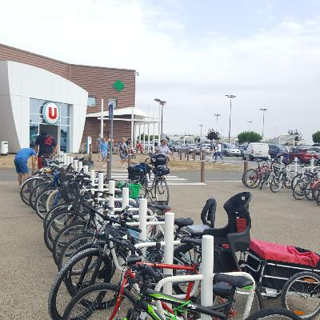
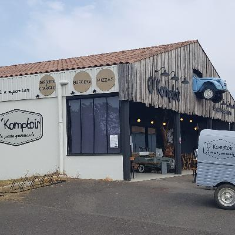
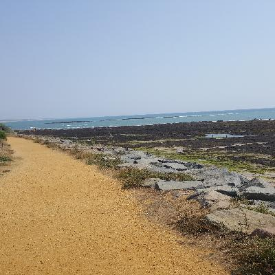
Sophie, Richard and Ana
I arrived kind of late at a place called Saint Jean de Monts, where I was greeted by Sophie and Richard, my warmshowers hosts. The had done a bunch of bicycle touring, and have been to Burkina Faso! They're involved in a charity there that sponsors kids' education. Maybe 45 minutes later, Ana arrived. She's bicycling south. Originally from Spain, she just finished a project in Columbia studying re-integration of folks who were FARC rebels. We had an awesome, relaxed dinner.
Rain! Another flat!
As I left Sophie and Richard's, it started raining. The rain was continuous, but it was only moderately hard, and that just for the first three hours or so. After that, it turned into continuous light rain for a couple of hours.
I think it was about an 80km ride, which wasn't helped by all the rain and the mud. The first 30km or so was on dirt paths, too. I had my phone inside a dry bag, so it was tough to check my map – I missed the supermarket, so around 1 I had a moist-yet-stale third of a baguette I had left over.
Around 3 PM, with the rain mostly stopped, I finally went by a cafe-bar. The thing is, the bike route avoids towns. This bar was in the middle of nowhere, and there was an old kid propping up the bar. It turns out he had traveled extensively in Burkina Faso! Weird. I got a ham-and-butter sandwich (the French staple), and went on my way.
About 7km from my next stop, another flat! At least it wasn't raining anymore. The hole in the inner tube was on the inside, were you'd expect it to be compromised by a broken spoke. I guess I should have asked for a new inner tube with the new wheel. Oh well - now that I know how to replace it, it only takes half an hour or so.
Saint-Michel-Chef-Chef
I rolled into Saint-Michel-Chef-Chef at about 7:30, where I had an AirBnb lined up for two days. Yay rest! As type this, it's afternoon, and I haven't budged, except to buy food at the supermarket 200 meters away. It's a brand new house in a housing development, hosted by Beatrice, who works as a security guard.